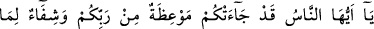
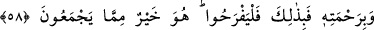
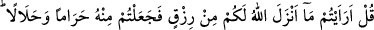
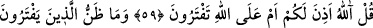
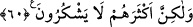
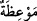

ÖĞÜT,
ŞİFA VE RAHMET
57. Ey insanlar, size Rabb’inizden bir öğüt, göğüslerdeki hastalığa bir şifa ve
inananlara bir yol gösterici ve rahmet gelmiştir.
58. De ki: “Allah’ın lütfuyla ve rahmetiyle (evet) işte onunla ferahlansınlar. O,
onların toplayıp yığdıklarından daha hayırlıdır.”
59. “De ki: “Baksanıza Allah’ın size rızık olarak indirdiği şeylerin bir kısmını
haram, bir kısmını helal yaptınız.” De ki: “Allah mı size böyle izin verdi, yoksa siz
Allah’a iftira mı ediyorsunuz?”
60. Allah’a yalan uyduranların kıyamet günü hakkındaki zanları nedir? Allah
insanlara karşı çok lütuf sahibidir, ama çokları şükretmiyorlar.
“Ey insanlar” Bu Kaşifî Tefsiri’nde belirtildiği üzere genel bir nidadır. el-İrşad’da
ise sadece Mekke kâfirlerine tahsis edilmiştir.
“Size Rabb’inizden bir öğüt…”
Mevıza, ister azarlama ve korkutma ile olsun
ister yumuşaklık ve sevdirme suretinde olsun kişilere akıbetlerini hatırlatmaktır. Burada
ise sizin lehinize ve aleyhinize bilmeniz gerekenleri açıklayan, güzel davranışları teşvik
eden, kötü davranışlardan nefret ettiren bir kitap yani Kur’an-ı Kerim mânâsınadır.
“göğüslerdeki hastalığa bir şifâ” cehalet, şüphe, şirk, münâfıklık ve diğer bozuk
inançlardan oluşan kalb hastalıkları için devâ “ve inananlara” gerek dış âlemde (âfâk)
gerekse insanın iç dünyasında (enfüs) yerleştirilen delillerden istidlal etmeye
yönlendirerek yakin ve hak yolunu gösteren “bir yol gösterici ve rahmet gelmiştir.”
Çünkü inananlar, Kur’an’ın gelişiyle inkâr ve dalâlet karanlıklarından kurtulmuşlardır.
Âyette sanki onların, aynısıymış gibi Kur’an’a yüklenen bu vasıflar mübâlağa içindir.